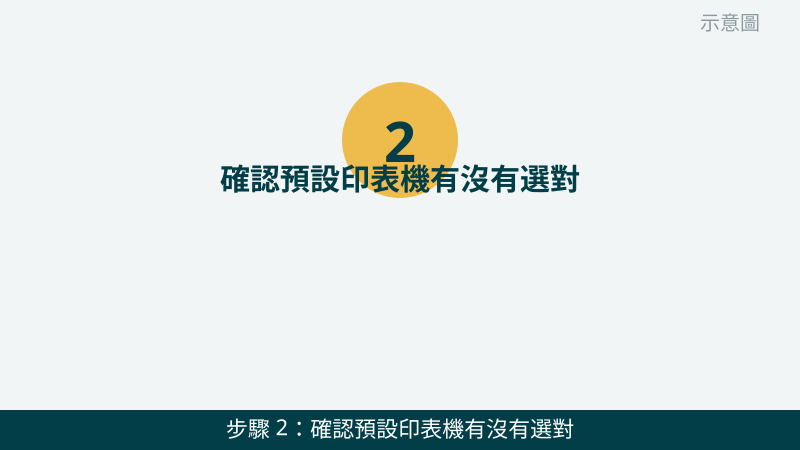
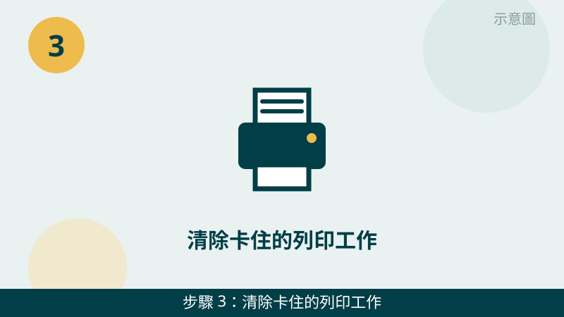
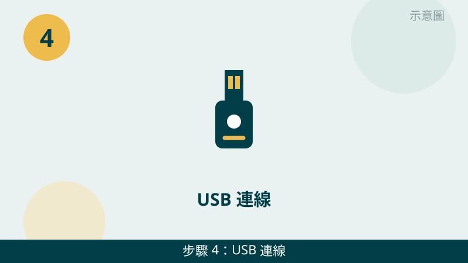
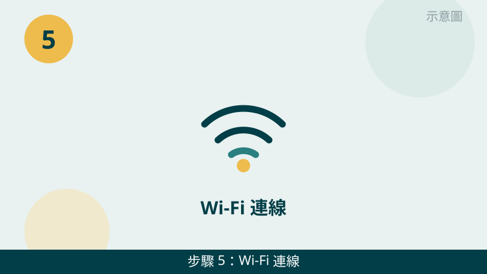

印表機連不上時，請先不要急著認定它壞了。USB、Wi-Fi、驅動、列印佇列四種原因，檢查的方向完全不一樣：USB 多半是線或孔的問題，Wi-Fi 多半是網路的問題，驅動多半是系統認不到印表機，佇列則是前面卡住的工作擋住了後面的列印。先確認您是哪一種連線方式，再往下對照檢查。
開始之前先跟您說明一個判斷原則：「印表機本身能不能動」和「電腦連不連得到」是兩件事。如果印表機面板正常、可以自己印測試頁，問題多半在電腦連線或設定上；如果印表機面板就亮紅燈或顯示錯誤，問題多半在印表機本身，請先把那個錯誤訊息拍下來。
印表機的錯誤畫面先傳給我們看
把印表機面板、電腦的印表機清單與列印佇列拍下來傳 LINE，連線、預設、佇列還是驅動問題，一看就知道往哪個方向查。先免費評估、報價透明，確認後再預約維修。
台中電腦印表機連不上自救檢查清單（由簡到難）
- 1. 先重開印表機與電腦，確認電源與燈號。請先把印表機電源關掉，等十秒再打開，等面板燈號穩定後，再把電腦也完整重開機一次。怎麼判斷：重開後印表機恢復就緒狀態，多半只是暫時的連線卡住；面板還是一直亮紅燈或顯示錯誤代碼，請把那個畫面拍下來，不要反覆開關機硬試。
示意圖（非官方截圖） - 2. 確認預設印表機有沒有選對。請到電腦的印表機設定裡看：預設印表機是不是您要用的那一台，而不是舊的印表機、或存成 PDF 的虛擬印表機。很多人是文件其實印出去了，只是印到另一台或存成檔案了。怎麼判斷：改回正確的預設印表機、再印一張測試頁，能印就是選錯台的問題。

示意圖（非官方截圖） - 3. 清除卡住的列印工作。請打開該台印表機的列印佇列，看有沒有一直停在列印中、或顯示錯誤的工作，把卡住的工作取消掉，再重新印一次。怎麼判斷：清掉卡住的工作後，後面的文件就跟著印出來了，就是佇列卡住；清完還是完全沒動靜，再往連線與驅動查。

示意圖（非官方截圖） - 4. USB 連線：先換孔、換線，避開集線器。如果是用 USB 線連接，請把線改插電腦上另一個 USB 孔，最好直接插主機後方的孔，不要經過集線器；手邊有另一條線，也可以換一條線試試。怎麼判斷：換孔或換線就連上了，就是線或孔接觸不良；每條線、每個孔都不行，再往驅動查。

示意圖（非官方截圖） - 5. Wi-Fi 連線：先確認電腦和印表機在同一個 Wi-Fi。請確認電腦連的 Wi-Fi 名稱，和印表機連的是同一個；如果最近換過路由器或 Wi-Fi 密碼，請到印表機的面板或設定裡重新連上新的 Wi-Fi。怎麼判斷：兩邊同一個 Wi-Fi、訊號正常，印表機狀態就會從離線變成就緒；印表機面板不會操作時，請先拍照問我們，不要亂按回復原廠設定。

示意圖（非官方截圖） - 6. 驅動重裝方向：先看型號，再找原廠驅動重裝。請先記下印表機的品牌與完整型號，到原廠網站下載對應您電腦系統的驅動程式；先把電腦裡舊的印表機裝置移除，再重新安裝一次。如果您不確定型號或系統版本，請先拍照問我們，不要下載來路不明的驅動程式。怎麼判斷：重裝驅動後電腦重新認到印表機、能印測試頁，就是驅動問題；重裝還是認不到，請把畫面傳給我們評估。
示意圖（非官方截圖）
別再自己試了
- 不要自行拆印表機的噴頭或雷射組件——拆開容易弄壞精密零件，修不回來反而更貴
- 卡紙時不要硬扯，請先拍照問我們，硬扯可能把紙屑留在機器裡、或拉壞滾輪
- 來路不明的驅動程式或一鍵修復工具不要隨便下載安裝，以免越修越糟
- 不確定能不能拆、能不能回復原廠設定時，一律先拍照問，不要硬試
常見問題
印表機顯示離線，但明明開著，是什麼原因？
最常見的原因有三種：印表機和電腦不在同一個 Wi-Fi、USB 線鬆脫或插在集線器上、或是列印佇列裡有卡住的工作擋住了後面的列印。請先照本文第 1 步到第 3 步重開印表機與電腦、確認預設印表機、清除卡住的列印工作，通常離線就會恢復；如果還是不行，請把錯誤畫面拍下來傳給我們評估。
Wi-Fi 印表機換了路由器就連不上，怎麼辦？
換路由器後，印表機記得的還是舊的 Wi-Fi 名稱與密碼，所以會連不上。請先確認電腦連的是新的 Wi-Fi，再到印表機的面板或設定裡重新連上新的 Wi-Fi，重新連上後再從電腦印一張測試頁確認。如果您不確定印表機的面板要怎麼操作，請先拍照問我們，不要亂按回復原廠設定。
印表機連不上的狀況拍照傳 LINE 就可以先判斷嗎？
可以先給方向。請把印表機的面板燈號或錯誤訊息、電腦上的印表機清單與預設印表機、以及列印佇列的畫面拍下來傳給我們，通常能先看出是連線、預設、佇列還是驅動問題；要完全確認，還是需要實機檢測，這部分評估不收費，請放心傳。
相關文章：自救百科總覽